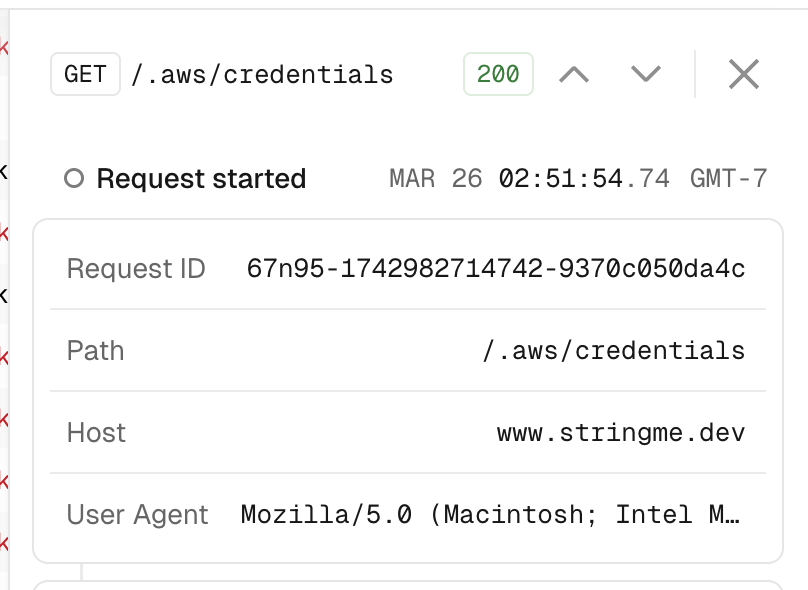
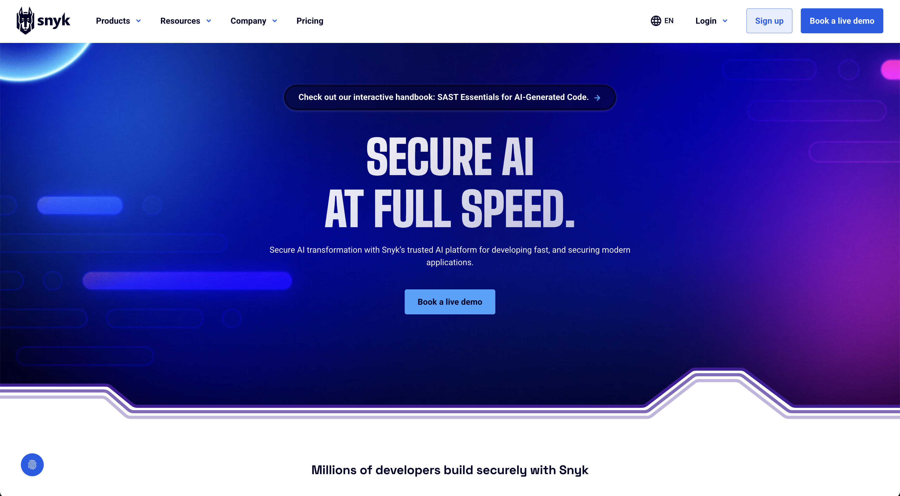

Vibe code exploitation
Fireship tackled vibe coding in a recent video.
He (they? it?) is smart, so I'm glad to see some of our recommendations for Vibe Coding Responsibly™ echoed in this video.
It's fun to see your own vibe-coded project undergo hacking attempts:

I think there's a real opportunity for something like Snyk for vibe coders. I thought Snyk might be this, but their go-to-market is quite enterprise-y:

There are many companies building the virtual SWE (Codegen, Devin, Magic), but there's an urgent need for a turnkey cybersecurity agent. Like actually urgent.
This suggests, too, that the vibe coder market (which is probably large) will be won by companies that integrate the software composer (formerly known as IDE) with infrastructure, such as Replit or Vercel.